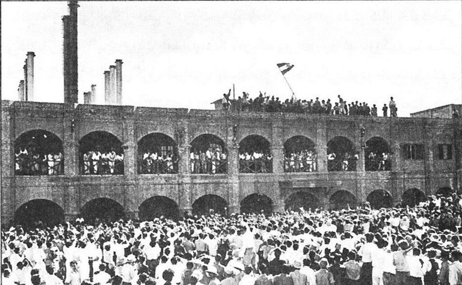
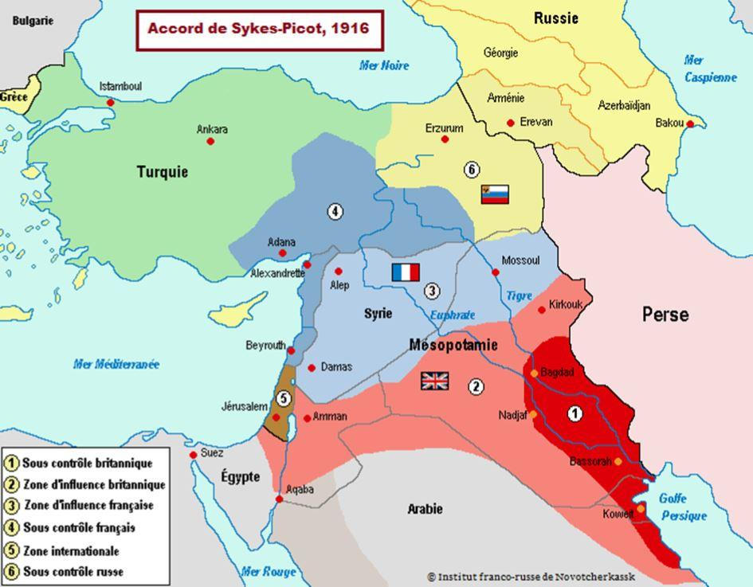

Crise iranienne : comme en 1951-1953, une histoire de pétrole et de pétroliers
par Samuele FURFARI
Certaines étapes dans l’Histoire façonnent l’avenir pour des dizaines d’années, voire des siècles. La présence britannique en Iran1 est l’un de ces événements déterminants. Un accord entre la Grande-Bretagne et l’Iran a façonné le XXe siècle de l’ère du pétrole au Moyen-Orient ; il restera déterminant pour le marché mondial du pétrole.

La NIOC procède au changement de signalétique à Abadan,
au siège de l'AIOC, 20 juin 1951
Les événements de l’actualité brûlante dans le détroit d’Ormuz le démontrent. Il arrive que l’Histoire repasse les plats. C’est le cas avec la crise iranienne en cours car, ironie de l’Histoire, elle ressemble à bien des égards à la première crise iranienne, celle de 1951-1953. Sans qu’il soit besoin de les souligner avec aujourd’hui, le lecteur saura y faire référence tellement les similitudes sont surprenantes.
À l’époque, le pétrole en Iran était produit et raffiné par l’Anglo-Iranian Oil Company, une entreprise créée par la perspicacité de Winston Churchill qui, avant tous les dirigeants du monde, avait compris que le pétrole allait être un élément moteur primordial pour l’avenir du monde.
Au départ d’une entreprise de Glasgow, Burmah Oil Company Ltd, en 1913, son gouvernement investit deux millions de livres de sorte que le gouvernement britannique devient l’actionnaire de référence. Cette entreprise va contribuer au développement pétrolier au Moyen-Orient, ce qui explique que lors des accords Sykes-Picot pour le partage de l’Empire ottoman, les Britanniques, plus avisés que les Français, choisissent la meilleure part : l’Irak et la Perse alors que les Français pensent être gagnant en choisissant la Syrie et le Liban qui bordent la mer Méditerranée commune à la France.
Le pétrole perse a été raffinée à partir de 1913 dans la raffinerie de l’AIOC de Abadan, qui a été pendant ses 50 premières années la plus grande raffinerie de pétrole au monde. Cette présence britannique remonte toutefois bien avant Churchill : le grand champ pétrolier à Masjed Soleiman a été découvert le 26 mai 1908. Le Shah de l’époque, Mozzafar al-Din Shah Qajar, s’était contenté d’une prime de 20 000 livres et de 16 % des profits que lui avait « généreusement » accordé le Britannique William Knox D’Arcy.
Au début des années 1950, la Perse devenue Iran en 1935, était un pays pauvre malgré ses énormes réserves de pétrole et de gaz (respectivement 10 et 15 % de celles mondiales). La rente pétrolière n’aidait pas le gouvernement iranien et par conséquent de nombreux Iraniens considéraient la concession britannique injuste. Ce contrôle par les Britanniques de la production pétrolière a déclenché un mouvement anticolonialiste réclamant la nationalisation pétrolière.
Cela a uni les politiciens iraniens autour de Mohammad Mossadegh, un homme politique qui n’était ni un révolutionnaire ni opposé au Shah. Néanmoins, il souhaitait un Iran plus moderne et plus démocratique. Il devient Premier ministre en 1951 afin de conduire la nationalisation de l’AIOC et crée la National Iranian Oil Company (NIOC) qui existe encore aujourd’hui.
Le Royaume-Uni convaincu de l’importance cruciale du pétrole entend maintenir sa concession qui devait courir jusqu’en 1968.
Londres réagit fortement à la nationalisation et agit en conséquence. L’Iran et le Royaume-Uni mobilisent des troupes, mais les États-Unis et l’URSS freinent les intentions de guerre des Britanniques.
L’affaire est portée devant la Cour internationale de Justice de La Haye pour arbitrage, les Britanniques demandant une procédure provisoire qui est approuvée le 5 juillet 1951. L’AIOC rapatrie tous ses experts et les Britanniques déclarent un boycott. La marine britannique bloque les pétroliers transportant du pétrole iranien en soutenant qu’ils transportent des cargaisons volées. À cette époque, les grandes compagnies pétrolières connues sous le nom de Majors, possédaient presque tous les pétroliers en exploitation.
Londres les a aussi convaincues de s’aligner avec AIOC, et les tankers ne transportent presque plus de pétrole iranien. Les partenaires des Britanniques augmentent considérablement leur production en Arabie saoudite, au Koweït et en Irak pour continuer à répondre à la demande mondiale de pétrole. Le président américain Harry Truman cherche à régler le différend pour respecter ses liens étroits avec le Royaume-Uni, mais aussi parce qu’il a fait preuve d’un certain respect pour l’autonomie de l’Iran et les intérêts nationaux, y compris en fournissant une assistance économique à l’Iran.
Cependant, Mossadegh ne pouvant se résoudre à abandonner la souveraineté de l’Iran, rejette tous les compromis proposés par les États-Unis. Téhéran ne parvient pas à éviter l’embargo britannique et les recettes pétrolières iraniennes tombent de 400 millions de dollars en 1950 à 2 millions de dollars en 1953. Mossadegh est confronté à une opposition croissante, malgré la nationalisation du pétrole encore très soutenue par la fierté du peuple iranien. Au début, les autorités religieuses chiites ont soutenu la nationalisation, puis ont reconsidéré leur soutien, aussi parce que Mossadegh était considéré comme trop moderne pour les mollahs conservateurs.
Les manifestations ont provoqué la colère du peuple, démontrant la profondeur de l’opposition iranienne à Mossadegh. Son gouvernement ne peut pas résister et la pression est telle que le 13 août 1953 par décret de Shah, Mossadegh est remplacé par le général Zahedi.
Puits de pétrole à Masjed Soleiman La collaboration des Majors et la diplomatie réussissent à convaincre le Shah de signer un accord lui permettant de sauver la face puisque la nationalisation du pétrole n’est pas remise en question. Les bénéfices seront partagés par moitié entre la société nationale iranienne et un consortium nommé Iranian Oil Participants Ltd (IOP) de 7 Majors (BP 40 %, Shell 14 %, Esso 7 %, Gulf 7 %, Texaco 7 %, Mobil 7 %, Socal 7 %), les indépendants américains (5 %) et Total (6 %). Il s’agissait là d’un échec majeur pour le gouvernement britannique et le début de l’influence d’autres acteurs au Moyen-Orient.
Depuis 1979, la République islamique d’Iran affirme que les États-Unis ont organisé le remplacement de Mossadegh, mais il n’y a aucune preuve que les protestations du peuple iranien ont été fomentées par la CIA malgré les fake news.
Chassé d’Iran, AIOC n’avait plus aucune raison de s’appeler ainsi et est devenue en 1954 British Petroleum et plus tard plus simplement BP afin de démontrer qu’elle n’est plus dirigée par le gouvernement britannique. Aujourd’hui les cinq principaux actionnaires institutionnels de BP sont des États-Unis.
À l’époque les tankers transportant du brut qui appartenait légalement à une compagnie britannique ont été bloqués. Aujourd’hui, c’est le Grâce 1, un tanker battant pavillon panaméen et transportant du pétrole brut iranien, qui est arraisonné au large de la presqu’île de Gibraltar par les Britanniques qui accusent l’Iran d’avoir caché, grâce à une navigation anormalement longue, sa destination vers la Syrie. Encore faut-il savoir si c’est vraiment du brut car on soupçonne qu’il s’agit de produits pétroliers, ce qui conviendrait mieux au régime de Bachar el-Assad.
En réaction, les Pasdarans bloquent le Stena Impero dans le détroit d’Ormuz, un tanker sous pavillon britannique, pour « non-respect du Code maritime international », alors que pour le Foreign Office le navire a été arraisonné « en claire violation du droit international », alors qu’il se trouvait dans les eaux territoriales d’Oman.
Aujourd’hui les réserves en hydrocarbures de l’Iran sont toujours énormes, mais l’Iran reste un pays de plus en plus marginalisé sur la scène mondiale des hydrocarbures et pas seulement à cause des sanctions imposées par l’administration Trump2. Alors que l’Iran du Shah vendait 5,6 millions de barils par jour (Mb/j) de pétrole, l’an dernier – avant les sanctions – l’Iran de la République islamique a dû se contenter d’une exportation de 2,8 Mb/j – la moitié ! À présent, soumis aux sanctions, il exporte seulement 300 000 b/j.
Le peuple va-t-il réagir comme en 1951 ? Probablement pas, car sous le contrôle strict des Mollahs, il n’existe pas à l’intérieur de réelle opposition, mais aussi parce que le peuple iranien est un peuple fier et nationaliste, comme on l’a vu avec les événements de 1951-1953. Existe-t-il un Mossadegh contemporain qui voudrait démocratiser le pays, et apporter le développement grâce à la manne pétrolière ?
La CIA, pas plus alors qu’aujourd’hui, n’a besoin d’intervenir. Les USA possèdent une arme bien plus forte que d’éventuels coups montés par des services d’espionnage. Ils sont devenus les premiers producteurs du monde avec 15 Mb/j… Le monde n’a plus besoin du pétrole iranien. L’Iran, lui a besoin d’urgence de la rente pétrolière ; il ne peut pas attendre, et doit trouver un compromis.
Partager cette page